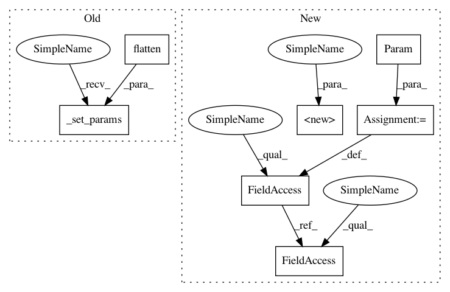

21dd82f8d95be737999e53c638e6f062d7039a19,GPy/kern/parts/bias.py,Bias,__init__,#Bias#Any#Any#,10
Before Change
self.input_dim = input_dim
self.num_params = 1
self.name = "bias"
self._set_params(np.array([variance]).flatten())
def _get_params(self):
return self.variance
After Change
:param variance: the variance of the kernel
:type variance: float
super(Bias, self).__init__(input_dim)
self.input_dim = input_dim
self.num_params = 1
self.name = "bias"
self.variance = Param(lambda: self.name+"_variance", variance, None)
self.set_as_parameters(self.variance)
//self._set_params(np.array([variance]).flatten())
// def _get_params(self):
In pattern: SUPERPATTERN
Frequency: 3
Non-data size: 7
Instances
Project Name: SheffieldML/GPy
Commit Name: 21dd82f8d95be737999e53c638e6f062d7039a19
Time: 2013-10-22
Author: ibinbei@gmail.com
File Name: GPy/kern/parts/bias.py
Class Name: Bias
Method Name: __init__
Project Name: SheffieldML/GPy
Commit Name: 8c02e4af36c56f0cac7edc22d3caa8e96e559655
Time: 2013-11-06
Author: ibinbei@gmail.com
File Name: GPy/kern/parts/rbf_inv.py
Class Name: RBFInv
Method Name: __init__
Project Name: SheffieldML/GPy
Commit Name: d3721b76a8ec4f98932474834ca9add20e7f04e8
Time: 2013-10-25
Author: ibinbei@gmail.com
File Name: GPy/kern/parts/linear.py
Class Name: Linear
Method Name: __init__